File: 000810.gt.txt (if the image is defective, simply delete all Arabic text and the line will be excluded)
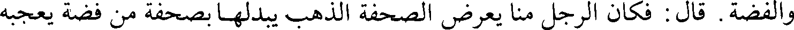
والفضة. قال : فكان الرجل منا يعرض الصحفة الذهب يبدلها بصحفة من فضة يعجبه
File: 000811.gt.txt (if the image is defective, simply delete all Arabic text and the line will be excluded)
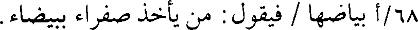
68/أ بياضها / فيقول : من يأخذ صفراء بيضاء.
File: 000812.gt.txt (if the image is defective, simply delete all Arabic text and the line will be excluded)
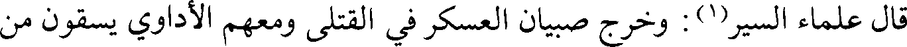
قال علماء السير(1) : وخرج صبيان العسكر في القتلى ومعهم الأداوي يسقون من
File: 000813.gt.txt (if the image is defective, simply delete all Arabic text and the line will be excluded)
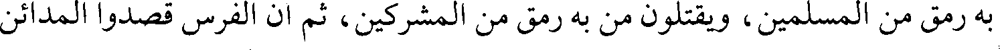
به رمق من المسلمين، ويقتلون من به رمق من المشركين، ثم إن الفرس قصدوا المدائن
File: 000814.gt.txt (if the image is defective, simply delete all Arabic text and the line will be excluded)
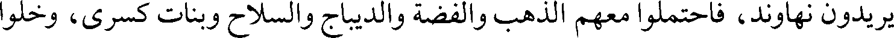
يريدون نهاوند، فاحتملوا معهم الذهب والفضة والديباج والسلاح وبنات كسرى، وخلوا
File: 000815.gt.txt (if the image is defective, simply delete all Arabic text and the line will be excluded)
ما سوى ذلك، واتبعهم سعد بالطلب، فبعث خالد بن عرفطة، وعياض بن غنم في
File: 000816.gt.txt (if the image is defective, simply delete all Arabic text and the line will be excluded)
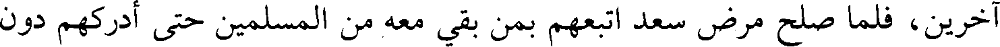
آخرين، فلما صلح مرض سعد اتبعهم بمن بقي معه من المسلمين حتى أدركهم دون
File: 000817.gt.txt (if the image is defective, simply delete all Arabic text and the line will be excluded)
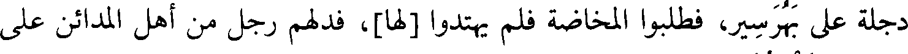
دجلة على بهرسير، فطلبوا المخاضة فلم يهتدوا [لها]، فدلهم رجل من أهل المدائن على
File: 000818.gt.txt (if the image is defective, simply delete all Arabic text and the line will be excluded)
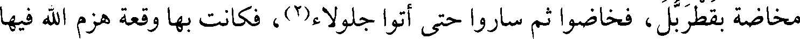
مخاضة بقطربل، فخاضوا ثم ساروا حتى أتوا جلولاء(2)، فكانت بها وقعة هزم الله فيها
File: 000819.gt.txt (if the image is defective, simply delete all Arabic text and the line will be excluded)
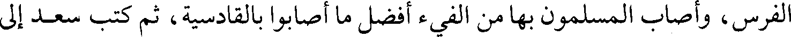
الفرس، وأصاب المسلمون بها من الفيء أفضل ما أصابوا بالقادسية، ثم كتب سعد إلى
File: 000820.gt.txt (if the image is defective, simply delete all Arabic text and the line will be excluded)
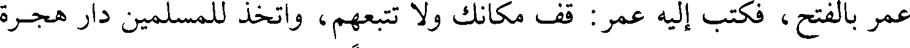
عمر بالفتح، فكتب إليه عمر : قف مكانك ولا تتبعهم، واتخذ للمسلمين دار هجرة
File: 000821.gt.txt (if the image is defective, simply delete all Arabic text and the line will be excluded)
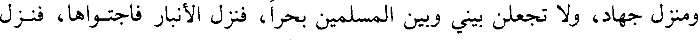
ومنزل جهاد، ولا تجعلن بيني وبين المسلمين بحرا، فنزل الأنبار فاجتواها، فنزل
File: 000822.gt.txt (if the image is defective, simply delete all Arabic text and the line will be excluded)
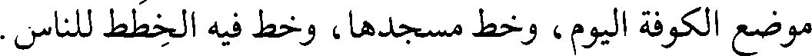
موضع الكوفة اليوم، وخط مسجدها، وخط فيه الخطط للناس.
File: 000823.gt.txt (if the image is defective, simply delete all Arabic text and the line will be excluded)
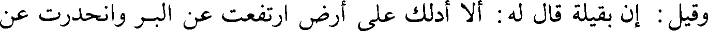
وقيل : إن بقيلة قال له : ألا أدلك على أرض ارتفعت عن البر وانحدرت عن
File: 000824.gt.txt (if the image is defective, simply delete all Arabic text and the line will be excluded)
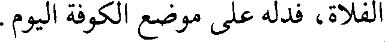
الفلاة، فدله على موضع الكوفة اليوم.
File: 000825.gt.txt (if the image is defective, simply delete all Arabic text and the line will be excluded)
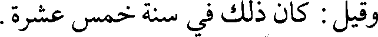
وقيل : كان ذلك في سنة خمس عشرة.
File: 000826.gt.txt (if the image is defective, simply delete all Arabic text and the line will be excluded)
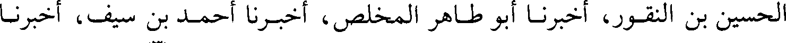
الحسين بن النقور، أخبرنا أبو طاهر المخلص، أخبرنا أحمد بن سيف، أخبرنا
File: 000827.gt.txt (if the image is defective, simply delete all Arabic text and the line will be excluded)
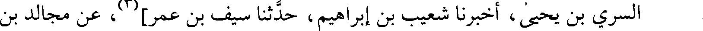
File: 000828.gt.txt (if the image is defective, simply delete all Arabic text and the line will be excluded)
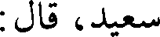
سعيد، قال :
File: 000829.gt.txt (if the image is defective, simply delete all Arabic text and the line will be excluded)
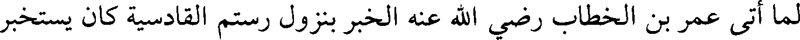
لما أتى عمر بن الخطاب رضي الله عنه الخبر بنزول رستم القادسية كان يستخبر
File: 000830.gt.txt (if the image is defective, simply delete all Arabic text and the line will be excluded)
File: 000831.gt.txt (if the image is defective, simply delete all Arabic text and the line will be excluded)
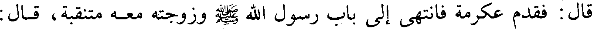
قال : فقدم عكرمة فانتهى إلى باب رسول الله صلعم وزوجته معه متنقبة، قال :
File: 000832.gt.txt (if the image is defective, simply delete all Arabic text and the line will be excluded)
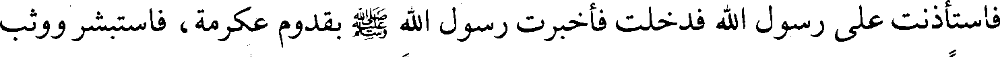
فاستأذنت على رسول الله فدخلت فأخبرت رسول الله صلعم بقدوم عكرمة، فاستبشر ووثب
File: 000833.gt.txt (if the image is defective, simply delete all Arabic text and the line will be excluded)
قائما على رجليه وما على رسول الله صلعم رداء فرحا بعكرمة، وقال : أدخليه، فدخل،
File: 000834.gt.txt (if the image is defective, simply delete all Arabic text and the line will be excluded)
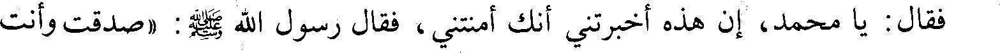
فقال : يا محمد، إن هذه أخبرتني أنك أمنتني، فقال رسول الله صلعم : «صدقت وأنت
File: 000835.gt.txt (if the image is defective, simply delete all Arabic text and the line will be excluded)
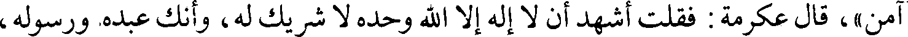
آمن»، قال عكرمة : فقلت أشهد أن لا إله إلا الله وحده لا شريك له، وأنك عبده ورسوله،
File: 000836.gt.txt (if the image is defective, simply delete all Arabic text and the line will be excluded)
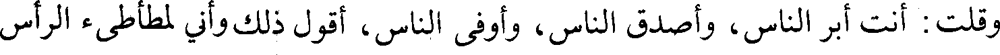
وقلت : أنت أبر الناس، وأصدق الناس، وأوفى الناس، أقول ذلك و أني لمطأطئ الرأس
File: 000837.gt.txt (if the image is defective, simply delete all Arabic text and the line will be excluded)
استحياء منه؛ ثم قلت : يا رسول الله، استغفر لي كل عداوة عاديتكها أو مركب أوضعت
File: 000838.gt.txt (if the image is defective, simply delete all Arabic text and the line will be excluded)
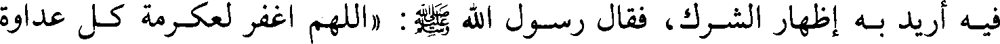
فيه أريد به إظهار الشرك، فقال رسول الله صلعم : «اللهم اغفر لعكرمة كل عداوة
File: 000839.gt.txt (if the image is defective, simply delete all Arabic text and the line will be excluded)
58/أ عادانيها، أو نطق بها أو مركب أوضع فيه / يريد أن يصد عن سبيلك»، فقلت : يا
To Save: `Ctrl+s`, make sure to choose `Webpage, complete`!